Identité visuelle · première version
Metron
Un poussin, deux points qui font le ö, un bec. Tout se règle dans tokens.css : couleurs, mouvement, arrondis.
Le signe

Le poussin ·logo.svgicon.svgLe mot
Metron
Le ö est dessiné en CSS : un « o » sans point, deux quarts de disque bruns. Il reprend les formes du poussin.Couleurs de marque
Jaune poussin
#FFFD94La juste mesureBrun
#663A2BLes points du ö, l'encre forteOr
#CE9A2BAu-dessus de la mesureBleu
#2D7BB4En dessous, l'icôneDans l'interface
Fond
--bgCarte
--surfaceEncre
--inkDans ta mesure
--band
dans ta mesure
un peu en dessous
au-dessus
Jamais de rouge : on est en dessous (froid) ou au-dessus (chaud), jamais « en échec ».
Pages plein écran
Bienvenue
--ob-1Comment ça marche
--ob-2Ce que tu fais
--ob-3Ce qui compte
--ob-4Habitudes actuelles
--ob-5Génération
--ob-genTypographie
Hanken Grotesk
Une grotesque contemporaine, nette et chaleureuse. Titres en 650–750, texte en 400–500, serrés de -2 à -3 % sur les grands corps.
Qu'est-ce qui compte pour toi ?Question · 36 / 650
Tu es dans ta mesure.Titre · 24 / 620
Coche ce que tu fais, sans pression.Texte · 16 / 400
Détail par domaineÉtiquette · 12 / majuscules
Mouvement
Une seule courbe pour tout.
cubic-bezier(.2, .8, .2, 1) en 600 ms : l'élément démarre vite puis se pose doucement. Radar, barres, courbe, feuilles et boutons l'utilisent, pour que tout bouge de la même façon.